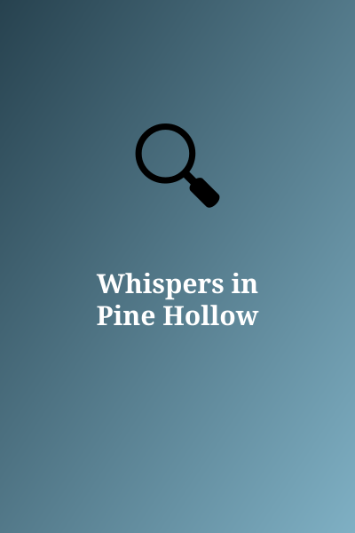

Whispers in Pine Hollow
Author: Gina Flores
Genre: Mystery
Synopsis: A town's missing cat posters hide something bigger.
Chapter 1: Poster Number 40

Forty posters covered Pine Hollow, each showing a different cat with the same name. Dani decided to find out why.
To be continued...